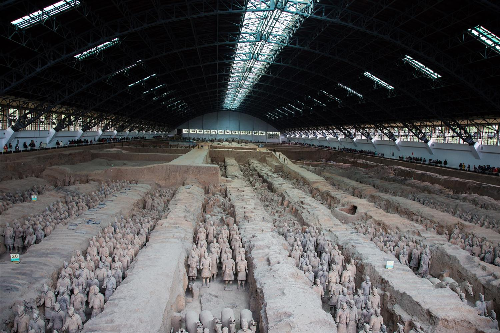

Tappa 2 di 6 · 2 notti
Martedì 3 — giovedì 5 novembre · arrivo in treno nel pomeriggio, partenza per Chengdu

Due notti, una giornata piena e due mezze. È la tappa più compressa del viaggio.
Il treno da Pechino mette circa quattro ore e mezza e arriva nel pomeriggio. Resta una serata.
La giornata piena, e va spesa nell'ordine giusto.
Mattina in città, poi treno per Chengdu nel pomeriggio.
Giovedì è una mattina, non un giorno. Il giro completo delle mura, la Grande Moschea, il pranzo, l'hotel e la stazione non stanno nella stessa mattinata. Scegli: o le mura per intero, o la moschea con calma. Provare a fare entrambe è il modo per correre in stazione.
| Giorno | Alba | Tramonto | Luce |
|---|---|---|---|
| Mar 3 nov | 07:05 | 17:50 | 10h 45m |
| Mer 4 nov | 07:06 | 17:49 | 10h 43m |
| Gio 5 nov | 07:07 | 17:48 | 10h 41m |
Medie di novembre: 4–15°, aria secca e spesso foschia. Sulle mura, in bicicletta e senza niente che fermi il vento, sembra più freddo di quanto dica il termometro.
Ci sono i bus turistici dalla zona della stazione ferroviaria e la metro con navetta finale. In due, un taxi via app costa poco più e fa guadagnare l'ora migliore della giornata: quella prima dei gruppi.
Tra le tre fosse e il museo si cammina parecchio, e le fosse sono coperte ma non riscaldate. Vale lo stesso discorso delle scarpe e degli strati.
Xi'an ha più stazioni ferroviarie e i treni veloci non partono tutti dalla stessa. Controlla quale sul biglietto il giorno prima, non la mattina della partenza.
Xi'an era il capolinea della Via della Seta e si mangia ancora così: grano, agnello, cumino, poco riso.
Carne di maiale, o di agnello, stufata per ore con le spezie, tritata e chiusa in una focaccia cotta sulla piastra. Lo chiamano l'hamburger cinese, ma è più vecchio di qualche secolo.
Una sola tagliatella larga come una cintura e lunga quanto il piatto, tirata a mano battendola sul banco. Servita con peperoncino, aceto e olio bollente versato sopra. Il suo nome si scrive con uno degli ideogrammi più complicati che esistano.
Ti portano una focaccia dura e una scodella vuota: la focaccia la spezzetti tu con le mani, in briciole piccole, e poi la cucina ci versa sopra il brodo di agnello. È un rito lento, ed è il piatto invernale della città.
Fettucce di farina di grano gelatinose, servite fredde con germogli, glutine spugnoso, aceto e olio di peperoncino. Contro-intuitivo a novembre, ma è il piatto che spezza tutto il resto.
Il profumo che senti camminando nel Quartiere Musulmano: agnello, cumino, peperoncino, cotto sulla brace lungo la strada.
Frittelle di cachi ripiene di noci e semi, fritte al momento nei banchi del Quartiere Musulmano. I cachi del monte Li sono di stagione proprio ora. Da mangiare caldi.
Questa nota resta solo su questo dispositivo. Vive nella memoria di questo browser, non passa da nessun server e non la ritrovi da un altro telefono. Se cancelli i dati del browser, non c'è più.